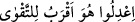

bülûğ çağına erişmemiş olan “yetime ve esire yedirirler.” Nitekim “Sevdiğiniz
şeylerden (Allah yolunda) harcamadıkça hayrın kemâline eremezsiniz” (Al-i,
İmran, 3/92) âyetinde de benzer bir mânâya işâret edilmektedir.
Âyette yer alan “ ifâdesini, “canları yemeği çekmesine rağmen” şeklinde tefsir
ettik. Bu âyet-i kerîmeyi; “onlar yemek yedirmeyi seve seve, yemeği yoksula, yetime ve
esire yedirirler. Bunu gönül hoşluğu ile yaparlar “şeklinde tefsir etmek de mümkündür.
Bu takdirde “hubbihî” kelimesindeki zamir, yukarda olduğu gibi yemeğe değil, fiilin
“masdar”ına râci olmuş olur. Nitekim; “ /Adâletli olun! Bu, Allah
korkusuna daha çok yakışan (bir davranış)tır” (el-Mâide, 5/8) âyetinde de “hüve”
zamiri kendisinden önce geçen “Âdâletli olun” fiilin masdarına râcidir.
“‘Alâ hubbihî” ifâdesiyle ilgili üçüncü bir tefsir şekli de şöyledir: “Onlar, Allah
Teâlâ sevgisi ile yemeği yoksula, yetime ve esire yedirirler” veya “onlar yemeği
yoksula, yetime ve esire Allah sevgisi taşıdıkları hâlde yedirirler.” Aslında bir sonraki
âyette geçen “Biz, sizi sırf Allah rızası için yediriyoruz” ifâdesine baktığımızda bu son
yapılan îzâh, daha uygun bir tefsirdir. Şu hâlde âyette masdar mef’ûlüne muzâf kılınıp
fâil ise terkedilmiştir. Buna göre onlar yoksulu, yetimi ve esiri sırf Allah Teâlâ’yı
sevdikleri için yedirmiş oluyorlar. Diğer taraftan “hubbihî” kelimesinin fâiline muzaf
kılınıp mef’ûlün terkedilmiş olması da mümkündür. Buna göre mânâ; “onlar yoksulu,
yetimi ve esiri onları Allah Teâlâ yedirmeyi sevdiği için yedirirler” demek olur.
Âyette geçen “et-taam” kelimesi normalde içilecek şeylerin dışında yenilecek
maddelerin ismidir. Ancak içilecek şeylere de “taâm” denir. Çünkü herhangi bir şeyi
“ta’m etmek”, ister yenilen ister içilen şey olsun onun tadına bakmak demektir. Ancak
“taâm” kelimesi her ne kadar genellik ifâde edip hem yenilecek hem de içilecek
maddelere şâmil olsa da burada hususi anlamının kasdedildiği daha ağırlık
kazanmaktadır.
Bilinmesi gereken şudur ki; tâatler şu iki noktada düğümlenir:
1- Allah’ın emrine itâat etmek. Nitekim “onlar adakları yerine getirirler” âyet-i
kerîmesiyle meselenin bu yönüne işâret olunmaktadır.
2- Allah’ın yaratıklarına şefkat etmek. Nitekim “onlar yemeği yoksula, yetime ve
esire yedirirler” âyeti ile de bu noktaya işâret olunmaktadır.
Âyet-i kerîmedeki “yemek yedirmek” ifâdesi bizzat yemek yedirmek olmasa bile
muhtaçlara iyilikte bulunma ve ne şekilde olursa olsun onlara yardımcı olmanın kinâye
yoluyla anlatımıdır. Ancak herhangi bir muhtaca karnını doyurmak sûretiyle iyilikte
bulunmak ona yapılabilecek iyiliklerin en şereflisi ve en üstünü olduğu için “ihsan ve
iyilik cinsi” bizzat “yemek yedirmek” iyilik ve ihsan ile ifâde edilmiştir. Nitekim İbn
Şeyh’in Havaşi’sindeki açıklama bu şekildedir.
Ma’rifet ehli olan birisi bu âyet-i kerîmeyi şöyle tefsir ediyor: Onlar mâli
menfaatlerden nefislerini uzaklaştırırlar. Nefislerini ahlâksızlıktan özellikle cimrilik
hastalığından tezkiye eder, temize çıkarırlar. Çünkü mal sevgisi perdelerin en kesîf ve